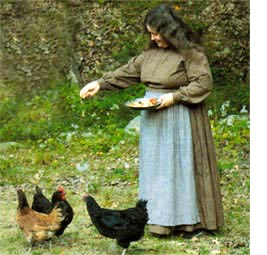
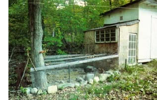

The first time I found an egg in the henhouse, I almost crowed. You'd think I had laid that first egg myself. I just never realized how much pleasure one could get from something as simple as raising chickens. I guess people could say, "Simple joys for simple minds." But people say a lot of things. In my homesteading adventure I've learned simplicity is the seed of joy, and finding your own lifestyle is the root of peace.
My husband and I have been homesteading for about 10 years in various locations. We seem to be compelled by circumstances to move every two years or so. This has given me ample opportunity to perfect my carpentry skills: Just as I finish building rabbit hutches, chicken coops and woodsheds, I have to start again at a new location. I've also established my share of vegetable and perennial flower gardens. At times, I feel like the Johnny Appleseed of Echinacea. Because of my parents' health, Bill and I recently sold our homestead and are starting afresh near them in the very northernest of northern New York. I don't worry, though. We have establishing a homestead down pat.
That's not to say that homesteading is easy, but things worth doing rarely are. The work can indeed be never-ending, but so can "modern" work. I spent years caught in the monotony of office work and am certain I prefer the repetition of homestead chores to the drudgery I experienced "at work." There, I brought home a paycheck. Here, the rewards are so much greater: feeling a wonderful sense of accomplishment, bringing my own food to my own table, being my own boss and setting my own priorities and work schedule.
Besides, never-ending projects aren't a burden; they're a joy. One thing I've noticed to be true about homesteading is one never seems to run out of projects to do. I often find myself concentrating on one project and finding a small piece of my mind wandering into the What-if area. "What if," it asks, "I changed this?" "This" usually has nothing to do with the project at hand, or at least nothing on the surface. My freefloating mind points out that if I did change "this" then the project I'm actually working on would work better. Even before I decide to change "this," my Whatif is already moving on. "What if," it asks, "we did this, too?" Before I know it, I've got a whole new crop of projects waiting for me. Luckily, I've found I'm happiest when faced with lots of projects. Every time I build something, I learn a new trick or skill, often from getting stuck and going to my husband for help.
The pleasure of working on projects with my husband was another unexpected homesteading pleasure, probably the greatest one of all. We both tend to be soli rarv folk wrapped in our own worlds most of the time. Homestead chores bring us out of those worlds to be together for a while. When we can cook food, make candles, start seeds, mend the chicken fence, plant the garden or put it to bed, we come together to share insights and laughter while sharing the labor. Bill is especially enchanted with the process of pressure canning. We perform a smoothly flowing dance as we pass the jars back and forth between the hot water, filling table and canner. We spend many happy autumn hours making and canning spaghetti sauce, applesauce, green beans, peaches, pears and whatever else we can grow or find in large quantities locally.
Not every project we tried has stayed in our lives. It's important to learn your limits and admit when doing something just doesn't feel right. Although we loved canning and eating the meat from rabbits we raised, the necessary slaughtering was not to our taste. So we no loner do it. We also learned to slaughter and clean our chickens. We don't mind doing it when necessary, but the amount of slaughtering entailed in raising meat birds isn't for us.
Still, I get a kick out of watching our hens roam around the yard, digging and scratching, or taking dust baths. When we first got them, Bill and I spent many a morning lying in bed, laughing after having been awakened by our young rooster's attempts at crowing. He progressed slowly from awkward croaks to slightly more appropriate cock-a-doodles, but never managed to master the full cock-a-doodledoo. To this day I still smile when I hear a rooster crow.
Homesteaders can pass on lots of advice and tips to newcomers to the life. But in terms of the Big Secret of Homesteading, I think that's a personal journey. I suggest you read all you can, talk with other homesteaders, weigh everything you learn and then make your decisions. But remember, sometimes the only way you'll learn whether something is right for you is by doing it.
At least that's true for me. Simple joys for simple minds: When I go out to the clothesline I can always be assured of finding a parade of farmyard friends hurrying along behind me, hoping I've got a pan of scraps for them. Look again and there will be Quiet, the cat, at the end of the parade, hoping I'll take a moment to scratch his stomach. I usually do, and stretch a bit and take note of which wildflowers are blooming at the moment, how deep the brook is or whether there are any birds at the feeder. Before heading back into the house, I'll take a quick stroll past the vegetable garden to see if anything needs picking, then stop off at the kitchen garden to pick an herb for that night's stew or do a bit of weeding.
May my simpleness never end.
Grace's Spaghetti sauce
11 quarts of tomato pulp (25-30 pounds, I'd guess)
1 tablespoon onion powder
12 garlic cloves cup olive oil
3 tablespoons oregano
6 bay leaves
2 tablespoons basil
2 tablespoons salt (or 1 tablespoon salt plus 2 tablespoons soy sauce)
1 tablespoons sugar
2 teaspoons crushed red pepper cup red wine
Simmer all the ingredients in a thick-bottomed pot for about 6 hours or until it has thickened down to 7-8 quarts. About an hour before the sauce is ready, fill a waterbath canner with water and start it heating. It should be almost boiling when you're ready to add your jars of sauce to it. Wash and rinse 7 quart or 14 pint jars. Keep them in hot water, removing one at a time as you fill them. Soak the appropriate number of can ning lids and rings in hot (not boiling) water.
Fill each jar to within 1/4 inch of the top with spaghetti sauce, adding 2 tablespoons of lemon juice for each quart or 1 tablespoon per pint. Using a clean, wet cloth, wipe the lip of each jar, add a lid and ring and hand tighten. Set each jar into the canner as you fill it, and then lower the filled rack into the pot.
Make sure the jars are covered with water, adding more as needed, and put on the lid. Once the water comes to a full boil, start the timer-35 minutes for pints, 40 minutes for quarts.
When the time is up, remove the jars with jar lifters and set them on a towel on the counter or table with a few inches of air space between jars. Cool. The jars should not be disturbed for about 24 hours while you wait for the lids to seal. You should hear a pop as each one seals. When they are cool remove the rings and test each lid to make sure it's sealed by gently trying to pry it off with your fingers. If any lid comes off this way it means it didn't seal and you need to put it in the refrigerator and use that jar soon. Remove the rings from the sealed jars, label the jars and store.
What's your story?
Nobody knows more about the joys and challenges of living lightly on the Earth than those of you already pursuing the dream. We'd like to hear from you. Submit your report and photos to: Firsthand Reports; Mother Earth News; 1503 SW 42nd St.; Topeka, KS 66609 or
letters@motherearthnews.com-MOTHER
|
 Grace Brockway feeds some of her chickens on her previous homestead in Ottisville, New York. She recently started a new homestead near Ellenburg Depot. |
 Building their own structures, such as this chicken run, at each of their homesteads has taught the Brockways a lot about homestead construction. |
|